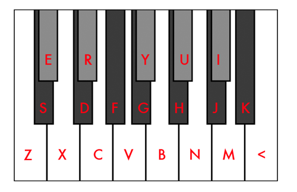

On a standard piano keyboard, one octave is divided into 12 notes made up from 7 white keys (A, B, C, D, E, F and G), and in between some of these, 5 black keys, which can be called either sharps or flats: A# (Bb), C# (Db), D# (Eb), F# (Gb), G# (Ab). Whether it's a sharp of a flat doesn't really matter, the note has the same frequency, just a different name. To recap, this gives us a grand total of 12 notes in one octave.
If you were to measure the frequency of a note, then measure the frequency of a note exactly one octave higher, you would see that the higher note has exactly twice the frequency of the lower note. For example, middle C has a frequency of 261.626Hz, and the C above it has a frequency of 523.251Hz.
Additionally, if you were to measure the frequency of a note, and then divide it by the frequency of the next lowest note, you would always get the same result: 1.05946. For example, if we divide the frequency of middle C (261.626Hz) by the next lowest note, a B with frequency 246.942Hz, we get 1.05946. In other words, the ratio between all adjacent notes is always the same. The number 1.05946 is special because it is the twelfth root of 2. This means that if you were to multiply it by itself 12 times, the answer would be 2. If you began at middle C, and multiplied 261.626Hz by 1.05946 12 times in a row, you would end up with 523.251Hz, which is exactly one octave higher as we found out in the paragraph above!
Dividing octaves up in this fashion, with equal ratios between notes, is called equal temperament. And when there are 12 notes in the octave, it is called 12 tone equal temperament, or 12-TET for short. But there is no law saying you have to do this. In the demo above, we have divided the octave up into 19 notes. This means the ratio between each note is now the nineteenth root of 2, which is 1.0371.
In 19 TET, we have to come up with a new layout for the keyboard because we have 7 new notes to fit it. In the first paragraph we said that sharps and flats sound the same. Well in 19 TET, they are different notes. In our demo, we have coloured the flats grey and made them slightly shorter than the sharps. That still leaves us 2 notes short, so we add in an E# and a B#, to complete the 19 note scale.
The keyboard above can be played by either clicking the notes with your mouse or by pressing keys on your computer keyboard. The lowest note, a C, corresponds to the 'Z' on the keyboard, and all other white notes, follow along on the bottom row. Black notes, (sharps) are on the row above, and grey notes, (flats) on the row above that. The picture below shows exactly which keys to press.
